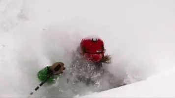

| Hobbies | Vacation Spots | Ski Resorts |
|---|---|---|
| Skiing | Kuai, Hawaii | Snowbasin |
| Biking | Hunnnington Beach, CA | Powder Mountain |
| Hiking | Jackson Hole, WY | Jackson Hole Ski |
| Golf | Lake Powell | Sun Valley, ID |
I have been skiing since I was two years old. Growing up my dad taught me how to ski, our entire family went skiing every saturday while I was growing up. So skiing is in my blood. My wife Kourtney is the same way. She grew up skiing every saturday with her family. So we are just a skiing family, we are now teaching our little boy how to ski and I am looking foward to the day that we will all ski together as a family.
In the summer I really enjoy biking both mountain biking and road biking. Unlike skiing I didnt do much biking in my younger years. This is something I have just picked up in the last 5 or so years. I started biking just to stay in shape for skiing in winter and I would rather be outside working out than stuck in a smelly gym with a whole bunch of other sweaty people. Although I started biking just to stay in shape I have really grown to love biking and look forward to it in the summer.
Traveling with my family is one of my all time favorites. Back before my wife and I had kids we would take a bunch of random trips and it was so fun. Those are still some of my funnest trips and memories. One summer we packed up in a day or so and took a random trip to Canada to watch the US womens soccer team play in the world cup, it was really spur of the moment but was a really fun trip. I look forward to doing things like that again but maybe once our kids get a little older.